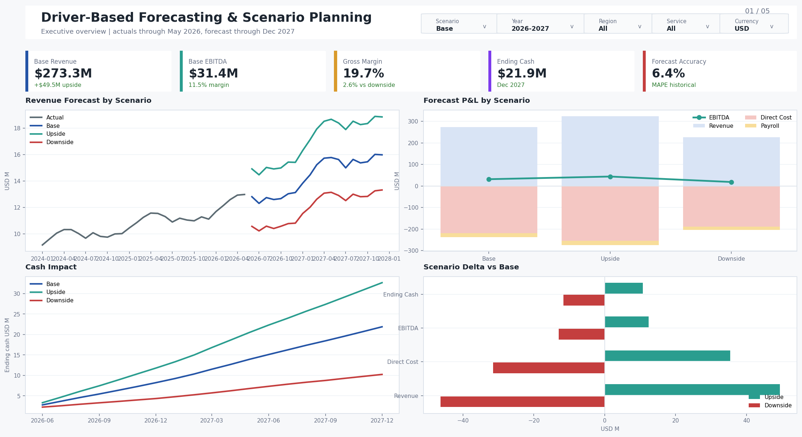
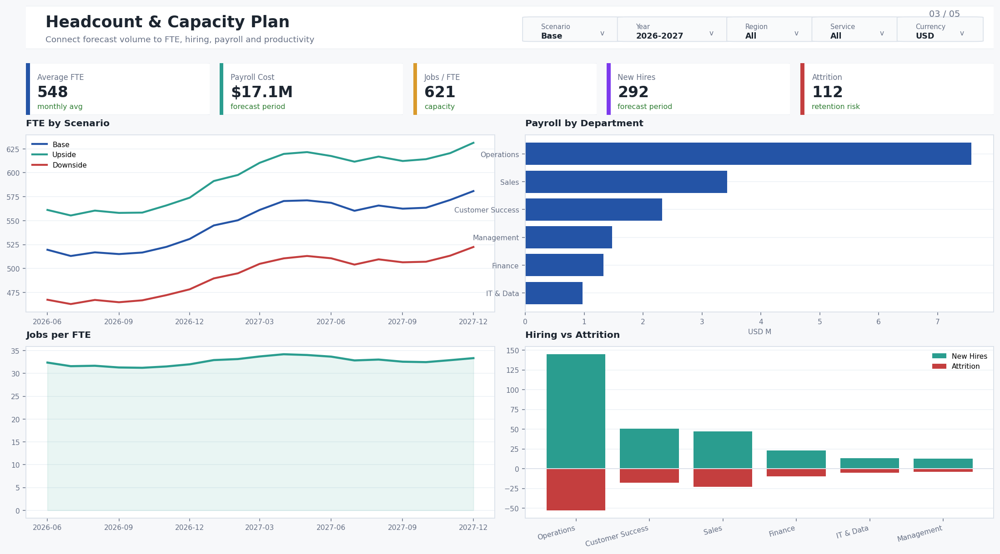
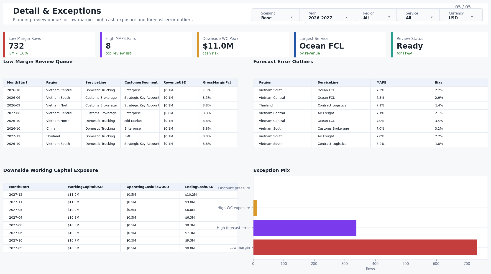

Power BI planning product
Driver-Based Forecasting & Scenario Planning
Planning model for FP&A leaders to compare Base, Upside, and Downside scenarios across revenue, direct cost, headcount, cash impact, and forecast accuracy through the 2027 forecast horizon.
$273.4MBase forecast revenue
$21.9MBase ending cash
6.4%Forecast MAPE
5 pagesExecutive and driver views
Executive Overview

Revenue & Cost Drivers

Headcount & Capacity

Cash & Forecast Accuracy

Detail & Exceptions

This portfolio preview uses sample or anonymized data to demonstrate driver-based planning logic without exposing company-confidential information.